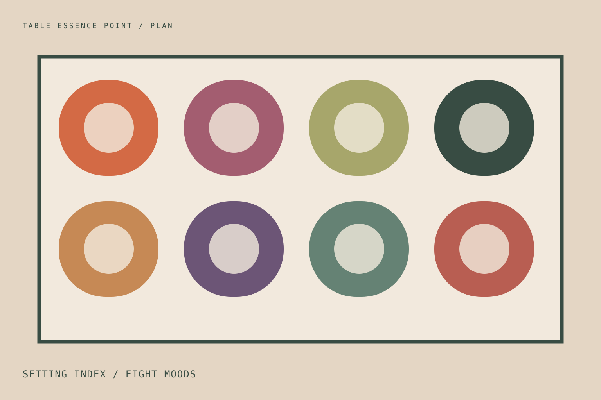

Setting index / eight scenes
Choose by gathering, not decoration.
Filter by the work the table must do, then adapt material and colour to the people, menu and season.

Setting index / eight scenes
Filter by the work the table must do, then adapt material and colour to the people, menu and season.
